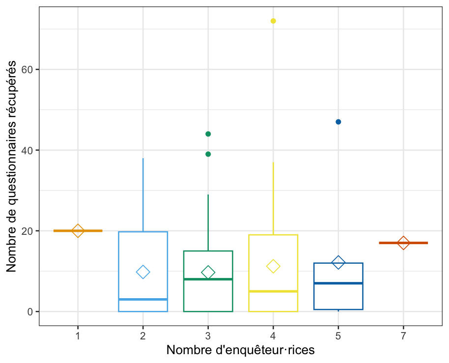

Au cours de la semaine du 18 au 22 novembre 2024, les étudiant·es de L2 de sociologie de 10 établissements membres du Collectif POF ont assuré la passation d’une enquête par questionnaire, dont le thème est cette année “L’engagement étudiant”.
À l’UVSQ, la passation a eu lieu sur trois jours (lundi, mardi, mercredi) et a été limitée au campus de Guyancourt dans les bâtiments Vauban et D’Alembert1. Une soixantaine d’étudiant·es ont été enquêteur·rices à tour de rôle pendant des créneaux de trois heures et ont enquêté une sélection de salles tirées au sort pour construire un échantillon d’étudiant·es répondant·es représentatif.
Ce petit post revient rapidement sur les conditions de la passation, à partir des données collectées dans les “Fiches d’observation”. C’est aussi l’occasion de remercier les étudiant·es enquêteur·rices pour leur mobilisation au cours de ces trois jours, les enseignant·es qui avec patience ont accepté d’interrompre leur enseignement, les étudiant·es qui ont bien voulu répondre, Stéphane Lavoipierre et Leïla Fardeau qui ont aussi assuré les permanences (et permis une numérisation rapide des fiches d’observation de la passation), nos collègues Camille Peugny, Christine Hamelin et Axelle Peltier qui nous ont transmis les ressources pédagogiques nécessaires pour la réussite de ce cours cette année, le service de reprographie qui a été extrêmement réactif, et les différentes instances qui ont accepté cet exercice.
1398 questionnaires collectés
Au total, 1398 questionnaires remplis ont été collectés. Ce nombre élevé (l’année dernière 1210 questionnaires numérisés ont été analysés à l’échelle de l’UVSQ) semble indiquer l’intérêt de réduire le nombre de jours de passation si on se restreint au seul campus Vauban-D’Alembert de Guyancourt.
Le rythme de la passation a été soutenu : en moyenne, 155 questionnaires par créneau jour-heure ont été collectés. Le créneau du mardi 12h-15h a été particulièrement couronné de succès avec 256 questionnaires collectés. Ce nombre élevé s’explique par le nombre plus important d’amphis tirés au sort sur ce créneau (4). Le lundi et le mardi, on observe un petit effet “fin de journée” avec moins de questionnaires collectés sur le dernier créneau, mais pas le mercredi.

Une durée de passation raisonnable
L’objectif de cette année était clairement de ne pas avoir un questionnaire trop long, pour limiter les abandons de passation, et pour respecter notre promesse d’une passation d’une “quinzaine de minutes”. Avec une durée moyenne observée d’environ 19 minutes (comprenant l’entrée dans la salle, la négociation, les explications, la distribution des questionnaires, la passation, la collecte), nous restons un peu au-dessus de notre objectif, pour limiter au mieux le temps pris sur le cours des étudiant·es et des enseignant·es.
Mais cette durée moyenne masque en réalité deux passations particulièrement longues :
Une passation a duré en tout 1h31, mais les enquêteur·rices ne sont pas resté·es de bout en bout dans la salle : l’enseignante a demandé aux enquêteur·rices de venir récupérer les questionnaires remplis à la fin du cours, et on peut donc penser que cette passation n’a pas perturbé le cours outre mesure.
Une autre passation a duré en tout 50 minutes, mais les enquêteur·rices ont retrouvé un de leur enseignant du département de sociologie qui a souhaité mobiliser ce moment de passation pour nourrir sa séance, et là encore, la passation n’a pas perturbé le cours, au contraire.
Si on exclut ces deux passations, la durée moyenne de la passation n’est plus que de 17 minutes (médiane à 17 minutes également) et on se rapproche d’une durée tout à fait raisonnable.
Parmi les passations un peu plus longues, on note dans certains cas l’absence d’enseignant (les enquêteur·rices avaient pour consigne de passer le questionnaire s’il n’y avait pas de cours mais des étudiant·es présent·es dans la salle, cela s’est produit dans deux cas) et la présence d’étudiant·es en échange moins familier·es de la scène politique nationale, et pour lesquel·les la traduction partielle a parfois été nécessaire.
Salles vides, étudiant·es déjà interrogé·es et refus
Toutes les salles tirées au sort n’ont pas été enquêtées : certaines étaient vides au cours du créneau de trois heures, parfois les étudiant·es dans la salle avaient déjà répondu au questionnaire dans un créneau précédent et dans d’autres cas les enquêteur·rices n’ont pas pu accéder à la salle de cours et faire passer le questionnaire. Les enseignant·es étaient simplement “invités” à laisser les enquêteur·rices effectuer la passation de l’enquête, mais cela n’avait rien d’obligatoire.
Sur 132 salles enquêtées (sur un tirage au sort nous amenant théoriquement à enquêter au total 135 salles, quelques fiches se sont égarées en chemin, on peut penser qu’il s’agissait de salles vides, les enquêteur·rices ont eu le temps de passer dans toutes les salles), 29 salles n’étaient occupées par aucun cours sur le créneau où elles avaient été sélectionnées (2 salles sans cours mais avec des étudiant·es ont tout de même fait l’objet d’une passation). Le mercredi midi est un moment où les salles sont particulièrement vides…
Dans les 103 salles enquêtées occupées par un cours, 72 ont pu faire l’objet d’une passation du questionnaire, soit un taux de réponse de 69 %. Ce taux de réponse montre bien que dans la grande majorité des cas, les enseignant·es (et les étudiant·es !) ont “joué le jeu”.
Parmi les 31 salles avec cours non enquêtées, 11 correspondent à des salles où les étudiant·es ont déjà été enquêté·es dans un créneau précédent et 20 salles non enquêtées correspondent à des refus de l’enseignant·e. Les raisons de ces refus de passation qui ont été remontées sont principalement liées à une évaluation en cours, à la réalisation d’exposés difficiles à interrompre, à un cours dense dans un programme “en retard”. Quelques enseignant·es déclarent ne pas avoir été prévenus de la passation de l’enquête, malgré l’affichage réalisé par l’équipe enseignante dans la semaine précédente et les emails envoyés aux directions des UFRs.
Les groupes d’enquêteur·rices
Insrit·es à environ 7 ou 8 étudiant·es par créneau de passation, les enquêteur·rices étaient incité·es à se scinder en plusieurs groupes pour réaliser la passation. Ainsi, la majorité des passations a été réalisée par 3 ou 4 étudiant·es. On n’observe pas de lien entre le nombre d’enquêteur·rices par passation et le nombre de questionnaires collectés. Être en nombre permet de se rassurer, et en même temps, interrompre un cours à plusieurs peut être susceptible de davantage de refus ?

Un mot sur la suite
À la suite de cette passation, les étudiant·es vont numériser les questionnaires à l’aide d’un masque de saisie. Les données sont analysées au cours du second semestre pour produire des “4-pages” synthétiques et une restitution collective est prévue. À suivre !
Notes de bas de page
L’UVSQ est étalée sur un territoire géographique relativement vaste que nous n’avons pas eu la prétention de couvrir, dans le souci de préserver les forces vives étudiantes, et parce que nous sommes encore des “bébés” au sein du collectif d’enquête national, pour n’y être que depuis la deuxième année !↩︎